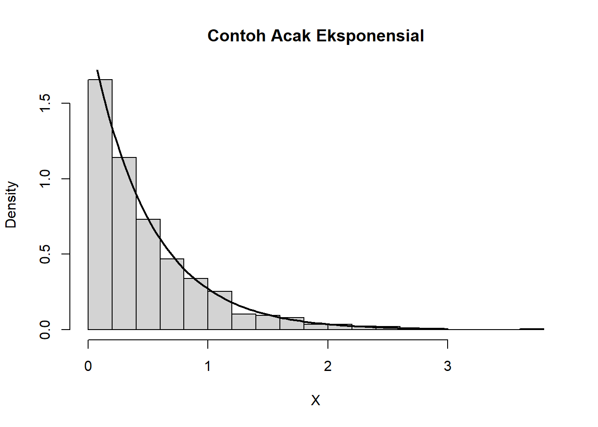
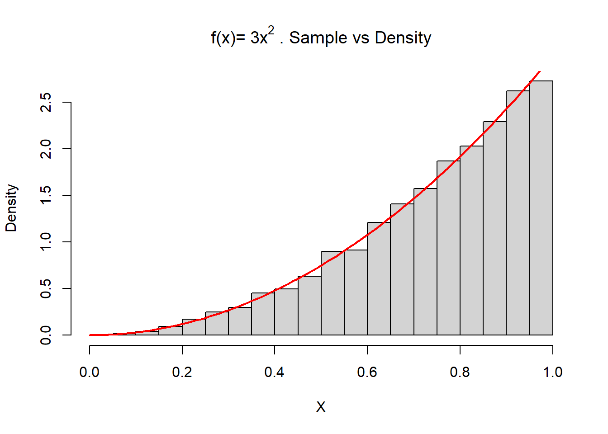
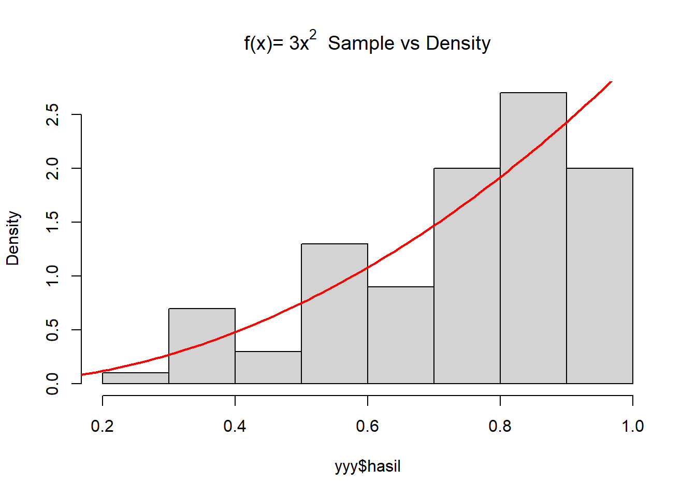
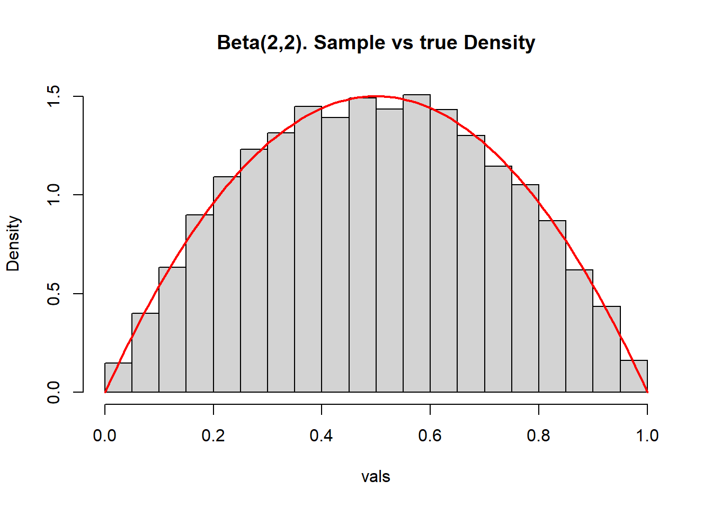
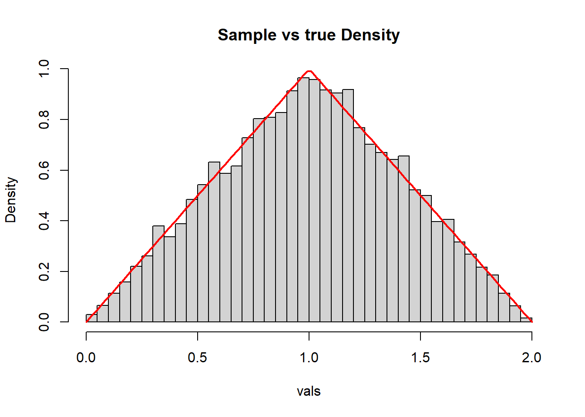
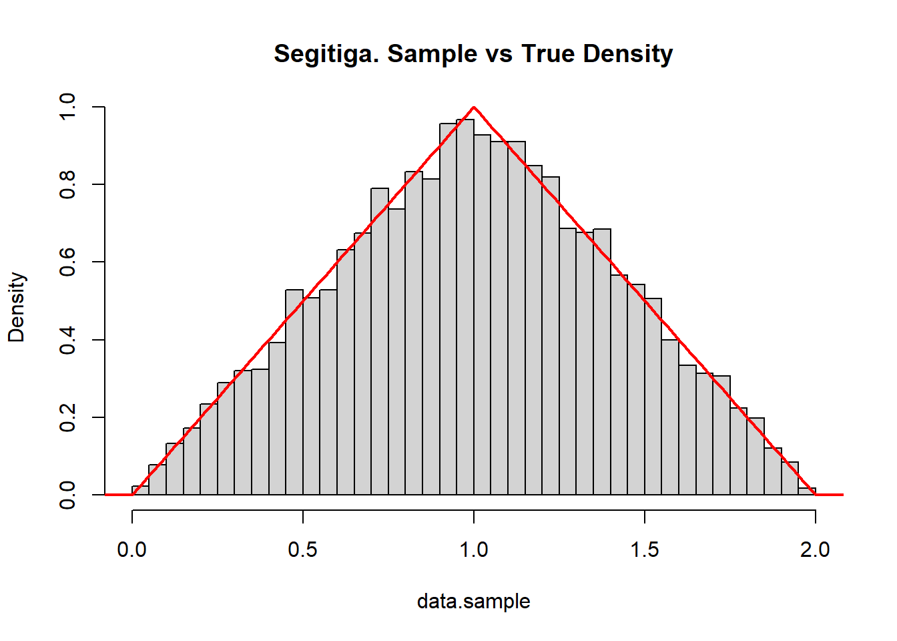

Bagian 7 Pembangkitan Bilangan Acak
Simulasi atau pembangkitan bilangan adalah salah satu topik penting dalam statistika maupun bidang lain. Sangat sering kita ingin menerapkan prosedur statistika yang memerlukan pembangkitan atau pengambilan contoh angka acak.
7.1 Fungsi Peluang Suatu Sebaran
R dilengkapi dengan sekumpulan fungsi untuk membangkitkan bilangan acak yang memungkinkan kita untuk mensimulasikan sebaran peluang yang umum digunakan seperti Normal, Poisson, dan binomial dan lain-lain. Beberapa contoh fungsi untuk membangkitkan data yang berasal dari sebaran tertentu antara lain (Peng 2020):
rnorm: menghasilkan angka acak dengan rata-rata dan simpangan baku yang diberikandnorm: mengevaluasi kepekatan peluang normal (dengan rata-rata dan simpangan baku yang diberikan) pada suatu titik (atau vektor titik)pnorm: mengevaluasi fungsi sebaran kumulatif untuk sebaran Normalrpois: menghasilkan anka acak yang menyebar Poisson dengan tingkat tertentu
Dalam R, fungsi yang berhubungan dengan simulasi mengenai sebaran disusun dengan format <awalan><sebaran>. <awalan> berupa satu huruf sebagai berikut:
duntuk kepekatan peluangruntuk membangkitkan peubah acakpuntuk sebaran kumulatifquntuk fungsi quantile atau inverse
Sedangkan <sebaran> adalah nama sebaran (atau singkatannya) seperti norm, pois, unif dan lain lain. Selengkapnya di tabel berikut
| Distribution | R name | Arguments |
|---|---|---|
| beta | beta |
shape1, shape2, ncp |
| binomial | binom |
size, prob |
| Chauchy | cauchy |
location, scale |
| chi-squared | chisq |
df, ncp |
| exponential | exp |
rate |
| F | f |
df1, df2, ncp |
| gamma | gamma |
shape, scale |
| geometric | geom |
prob |
| hypergeometric | hyper |
m, n, k |
| log-normal | lnorm |
meanlog, sdlog |
| uniform | unif |
min, max |
| neg binomial | nbinom |
size, prob |
| normal | norm |
mean, sd |
| Poisson | pois |
lambda |
| Student’s t | t |
df, ncp |
7.2 Teknik Pembangkitan Bilangan Acak
Teknik umum dalam pembangkitan bilangan acak antara lain 1. Inverse-transform method 2. Acceptance-rejection method 3. Direct Transformation
7.2.1 The Inverse Transform Method
Untuk membangkitkan contoh acak \(X\) dengan sebaran tertentu:
- Tentukan fungsi sebaran kumulatif \(F(x)\) dari sebaran yang diinginkan
- Hitung inverse dari \(F\) atau \(F^{-1}(x)\)
- Bangkitkan contoh acak \(u_1, u_2, u_3, ..., u_n\) yang menyebar \(Seragam(0,1)\)
- Hitung \(x_1 = F^{-1}(u_1)\), \(x_2 = F^{-1}(u_2)\), \(x_3 = F^{-1}(u_3)\), …, \(x_n = F^{-1}(u_n)\)
\(x_1, x_2, x_3\) merupakan contoh acak yang saling bebas dari peubah acak \(X\).
Contoh membangkitkan sebaran eksponensial.
Misal \(X \sim Eksponensial(\lambda)\)
- Fungsi sebaran kumulatif
\[ F(X) = 1 - e^{-{\lambda}x}; \quad x \ge 0 \]
- Fungsi inverse
\[ \begin{aligned} 1 - e^{-{\lambda}x} &= u \\ e^{-{\lambda}x} &= 1 - u \\ {-{\lambda}x} &= ln(1-u) \\ x &= -\frac{1}{\lambda}ln(1-u) \\ \end{aligned} \] Sehingga, \(F^{-1}(u) = -ln(1-u)/\lambda\)
- Bangkitkan contoh acak \(Seragam(0,1)\)
- Terapkan fungsi inverse untuk contoh acak yang telah dibangkitkan tersebut
Kode R
inv.exp <- function(u, lambda){
-log(1-u)/lambda
}
rand.exp <- function(n = 1, lambda = 1){
u <- runif(n)
x <- inv.exp(u, lambda)
return(x)
}set.seed(123)
rand.exp(n = 10, lambda = 2)## [1] 0.16954209 0.77630468 0.26295011 1.07286505 1.41061464 0.02331342
## [7] 0.37549990 1.11475582 0.40085086 0.30496835set.seed(123)
X <- rand.exp(n = 1000, lambda = 2)
hist(X, freq=F, breaks =20, xlab='X', main='Contoh Acak Eksponensial')
curve(dexp(x, rate=2) , 0, 3, lwd=2, xlab = "", ylab = "", add = T)
Contoh lain
Bangkitkan contoh acak dengan sebaran yang mempunyai fungsi kepekatan peluang
\[ f(x) = 3x^2, \quad 0 \lt x \lt 1 \]
Fungsi sebaran kumulatif
\[ F(x) = \int_0^x f_x(t)\,dt = x^3 \] Sehingga diperoleh fungsi inverse \(F^{-1}(u) = u^{1/3}\)
# http://www.di.fc.ul.pt/~jpn/r/ECS/index.html
inv.f <- function(u){
u^(1/3)
}
inv.transform <- function(n = 1, inv.f){
u <- runif(n)
x <- inv.f(u)
return(x)
}set.seed(123)
X <- inv.transform(n = 10000, inv.f)
hist(X, freq=F, breaks =20, main="f(x)=" ~3*x^2~". Sample vs Density")
curve(3*x^2, 0, 1, lwd=2, xlab = "", ylab = "", add = T, col="red")
Referensi: (Bonakdarpour 2016) dan (Leonelli 2021)
7.2.2 Acceptance-Rejection Method
Algoritma untuk membangkitkan peubah acak \(X \sim f(x)\) di mana \(0 < x < x_1\) :
- Bangkitkan \(x \sim U(x_0, x_1)\)
- Tentukan \(c\) sehingga \(f(x) \le c\) untuk \(0 < x < x_1\)
- Bangkitkan \(y_1 \sim U(0, c)\)
- Tentukan \(y_2 = f(x)\)
- Jika \(y_1 \le y_2\), terima \(x\)
Latihan
Bangkitkan bilangan acak yang memiliki fkp \(f_Y(y) = 3y^2; \quad 0 < y < 1\) dengan menggunakan *acceptance-rejection method
ar <- function(n,x0,x1,f) {
xx <- seq(x0,x1,length=10000)
c <- max(f(xx))
terima <- 0; iterasi <- 0
hasil <- numeric(n)
while(terima<n) {
x <- runif(1,x0,x1)
y1<- runif(1,0,c)
y2<- f(x)
if(y1<=y2) {
terima <- terima+1
hasil[terima]<-x }
iterasi <- iterasi+1 }
list(hasil=hasil,iterasi=iterasi)
}
set.seed(10)
f <- function(x) {3*x^2}
yyy <- ar(100,0,1,f)
par(mfrow=c(1,1))
hist(yyy$hasil,
main="f(x)="~3*x^2~" Sample vs Density", prob=T)
x <- seq(0, 1, 0.01)
lines(x, f(x), lwd=2, col="red")
Contoh lain
Bangkitkan peubah acak yang menyebar \(Beta(2,2)\)
# http://www.di.fc.ul.pt/~jpn/r/ECS/index.html
accept.reject <- function(f, c, g, rg, n) {
n.accepts <- 0
result.sample <- rep(NA, n)
while (n.accepts < n) {
y <- rg(1) # step 1
u <- runif(1,0,1) # step 2
if (u < f(y)/(c*g(y))) { # step 3 (accept)
n.accepts <- n.accepts+1
result.sample[n.accepts] = y
}
}
result.sample
}f <- function(x) 6*x*(1-x) # pdf of Beta(2,2), maximum density is 1.5
g <- function(x) x/x # g(x) = 1 but in vectorized version
rg <- function(n) runif(n,0,1) # uniform, in this case
c <- 2 # c=2 since f(x) <= 2 g(x)
vals <- accept.reject(f, c, g, rg, 10000)
hist(vals, breaks=30, freq=FALSE, main="Beta(2,2). Sample vs true Density")
xs <- seq(0, 1, len=100)
lines(xs, dbeta(xs,2,2), col="red", lwd=2)
Contoh lain, membuat sebaran “segitiga”
# triangle function
f <- function(x){
ifelse((0 < x) & (x < 1), x,
ifelse((1 <= x) & (x < 2), 2 - x, 0))
}
g <- function(x) x/x # g(x) = 1 but in vectorized version
rg <- function(n) runif(n, 0, 2) # uniform, in this case. limit x from 0 to 2
c <- 2 # c=2 since f(x) <= 2 g(x)
vals <- accept.reject(f, c, g, rg, 10000)
# Checking if it went well
hist(vals, breaks=30, freq=FALSE, main="Sample vs true Density")
xs <- seq(0, 2, len=100)
lines(xs, f(xs), col="red", lwd=2)
Dengan cara lain:
# https://users.phhp.ufl.edu/rlp176/Courses/PHC6089/R_notes/simulations.html
triangle.pdf = function(x){
ifelse((0 < x) & (x < 1), x,
ifelse((1 <= x) & (x < 2), 2 - x, 0))
}accept_reject = function(fx, n = 100) {
#simulates a sample of size n from the pdf fx using the accept reject algorithm
x = numeric(n)
count = 0
while(count < n) {
temp <- runif(1, 0, 2)
y <- runif(1, 0, 2)
if (y < fx(temp)) {
count = count + 1
x[count] <- temp
}
}
return(x)
}
data.sample = accept_reject(triangle.pdf, 10000)
hist(data.sample, breaks=30, freq=FALSE, main="Segitiga. Sample vs True Density")
xs = seq(-0.5, 2.5, by = 0.01)
lines(xs, triangle.pdf(xs), col="red", lwd=2)
Referensi: (Neto 2014)
7.3 Membangkitkan Bilangan Acak untuk Regresi
Bangkitkan bilangan acak untuk membangun persamaan regresi linier sederhana antara \(X\) terhadap \(Y\), dengan \(b_0 = 1, b_1 = 1\).
b0 <- 1
b1 <- 1
b0hat <- NULL
b1hat <- NULL
for (i in 1:100) {
eps <- rnorm (10)
X <- runif (10 ,5 ,10)
Y <- b0 + b1*X + eps
obj <- lm(Y~X)
b0hat <- c(b0hat, obj$coefficients[1])
b1hat <- c(b1hat, obj$coefficients[2])
}
hasil <- matrix (c(mean(b0hat), sd(b0hat), mean(b1hat) , sd(b1hat)), nrow =2, ncol =2)
rownames(hasil) <- c("mean","sd")
colnames(hasil) <- c("b0", "b1")
hasil## b0 b1
## mean 1.069179 0.9936142
## sd 1.927543 0.2600527Bangkitkan bilangan acak untuk membangun persamaan regresi linier berganda antara \(X_1\) dan \(X_2\) terhadap \(Y\), sehingga diperoleh \(b_0 = 10, b_1 = 2.3, b_2 = 0.7\).
set.seed(123)
X1 <- runif(25,10,25)
X2 <- runif(25,90,200)
Y <- 10 + 2.3*X1 + 0.7*X2 + rnorm(25,0,1)
model <- lm(Y~X1+X2)
summary(model)##
## Call:
## lm(formula = Y ~ X1 + X2)
##
## Residuals:
## Min 1Q Median 3Q Max
## -1.64768 -0.51104 -0.05084 0.56224 2.28118
##
## Coefficients:
## Estimate Std. Error t value Pr(>|t|)
## (Intercept) 8.819021 1.489143 5.922 0.00000584 ***
## X1 2.347724 0.045223 51.914 < 0.0000000000000002 ***
## X2 0.702732 0.006784 103.594 < 0.0000000000000002 ***
## ---
## Signif. codes: 0 '***' 0.001 '**' 0.01 '*' 0.05 '.' 0.1 ' ' 1
##
## Residual standard error: 0.9363 on 22 degrees of freedom
## Multiple R-squared: 0.998, Adjusted R-squared: 0.9978
## F-statistic: 5509 on 2 and 22 DF, p-value: < 0.00000000000000022Bangkitkan bilangan acak untuk membangun persamaan regresi linier berganda antara \(X_1\) dan \(X_2\) terhadap \(Y\), sehingga diperoleh \(b_0 = 1, b_1 = 1, b_2 = 1\).
library(MASS)
b0 <- 1
b1 <- 1
b2 <- 1
b0hat <- NULL
b1hat <- NULL
b2hat <- NULL
Sigma <- matrix(c(1 ,0.9 ,0.9 ,1),
nrow =2 , ncol =2)
mu <- c(1 ,1)
for ( i in 1:100) {
eps <- rnorm (10)
X <- mvrnorm (10, mu, Sigma )
Y <- b0 + b1*X [,1] * b2*X [,2] + eps
obj <- lm( Y~X )
b0hat <- c(b0hat, obj$coefficients[1])
b1hat <- c(b1hat, obj$coefficients[2])
b2hat <- c(b2hat, obj$coefficients[3])
}
hasil<- matrix(c(mean(b0hat), sd(b0hat), mean(b1hat), sd(b1hat), mean(b2hat), sd(b2hat)),
nrow=2, ncol=3)
rownames(hasil) <- c("mean","sd")
colnames(hasil) <- c("b0", "b1", "b2")
hasil## b0 b1 b2
## mean 0.6721352 0.8529024 1.138359
## sd 1.2919187 1.5528197 1.597078